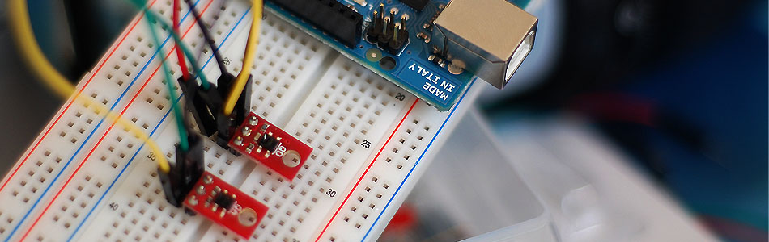

Line Sensing. QRE1113 Reflectance Sensor + Arduino

The QRE1113 is a common reflectance sensor often used in robotic line followers. The sensor works by shining an IR LED down and seeing how much of that light bounces back using a phototransistor. Because dark colors will bounce back less of the light, the sensor can be used to tell the difference between white and black areas. So an array of these can be used to help a robot determine where a dark line is on the ground so it can follow it. But they can also be used to determine proximity under an inch.
Both Pololu and Sparkfun sell digital and analog models of a QRE1113 breakout board. The analog version is very simple, it just outputs an analog voltage on the signal pin relative to how much light was reflected. And you might think the digital version, especially being called a line sensor by sparkfun, would just output HIGH when it sees a line, and LOW when it does not. But this is not the case.
The digital version is designed for times you do not have an analog input on your microcontroller but still need an analog reading of how much light was reflected. It does this by allowing you to charge a capacitor on the board, and then timing how long it takes to discharge. The more light that is reflected, the less time it takes to discharge the capacitor. In my tests, the times ranged between 10 microseconds (10/million) to 2.5 milliseconds, so this is all done very quickly and wont put much of a delay in your code.
Hooking Them Up
Hooking the QRE1113 to your Arduino is very simple. It just needs power (5V), ground, and an analog or digital pin depending on what version you have.
{kind=link}
{kind=link}
Code
The method of reading the values from the analog and digital version is very different, so we have 2 code examples for you.
Analog Version
//Code for the QRE1113 Analog board //Outputs via the serial terminal - Lower numbers mean more reflected int QRE1113_Pin = 0; //connected to analog 0 void setup(){ Serial.begin(9600); } void loop(){ int QRE_Value = analogRead(QRE1113_Pin); Serial.println(QRE_Value); }
Digital Version
//Code for the QRE1113 Digital board //Outputs via the serial terminal - Lower numbers mean more reflected //3000 or more means nothing was reflected. int QRE1113_Pin = 2; //connected to digital 2 void setup(){ Serial.begin(9600); } void loop(){ int QRE_Value = readQD(); Serial.println(QRE_Value); } int readQD(){ //Returns value from the QRE1113 //Lower numbers mean more refleacive //More than 3000 means nothing was reflected. pinMode( QRE1113_Pin, OUTPUT ); digitalWrite( QRE1113_Pin, HIGH ); delayMicroseconds(10); pinMode( QRE1113_Pin, INPUT ); long time = micros(); //time how long the input is HIGH, but quit after 3ms as nothing happens after that while (digitalRead(QRE1113_Pin) == HIGH && micros() - time < 3000); int diff = micros() - time; return diff; }
Article taken from bildr.org with minor changes - I am the original author of this content